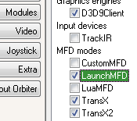
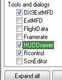
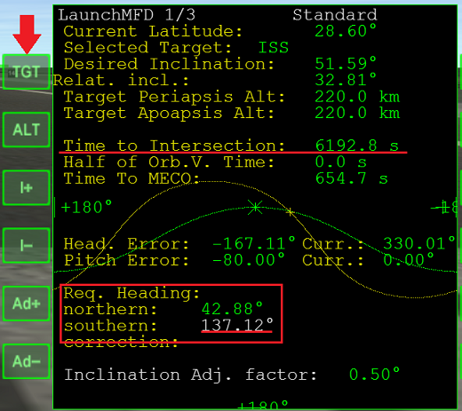
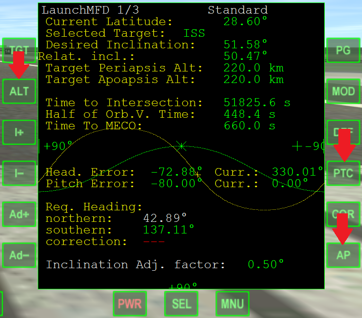

Launch MFD操作ガイド
Launch MFDは、打ち上げ方位を計算するためのMODです。
また、オートパイロットでの自動打ち上げにも対応しています。
ダウンロード
Orbiter2010対応版
Launch MFD for Orbiter 2010
Orbiter2016対応版
Launch MFD for Orbiter 2016
以下の3つのファイル(HUDDrawer, MMExt, VC++ 2005)もダウンロードしてください。
すでにインストール済みの場合は不要です。
HUDDrawer
Orbiter2010対応版
HUDDrawer SDK for Orbiter 2010
Orbiter2016対応版
HUDDrawer SDK for Orbiter 2016
ModuleMessagingExt
Orbiter2010対応版
ModuleMessagingExt for Orbiter 2010
Orbiter2016対応版
ModuleMessagingExt for Orbiter 2016
VC++ 2005
VC++ 2005のランタイムをPCに導入していない場合は、以下のリンクからダウンロードする。
Microsoft Visual C++ 2005 Service Pack 1 再頒布可能パッケージ MFC のセキュリティ更新プログラム
インストール手順はリンク先のページ下部を参照すること。
インストール
上記のファイルをそれぞれ解凍して、中身をOrbiterフォルダに上書き。
ランチャーのModulesタブを開いて、LaunchMFDとHUDDrawerにチェックを入れる。
 
打ち上げ方位を計算する

LaunchMFDを起動して、TGTをクリック。
ターゲットの名前を入力して、キーボードのEnterを押す。
Req. Heading（打ち上げに必要な方位）が表示される。
白くなっているほうが現在必要な数字。（上の画像の場合は約137°）
打ち上げ時刻が近づいてくると変化してしまうので、暗記するかメモを取っておくこと。
Time to Intersectionが残り300秒くらいになったら手動で離陸する。
さきほどの数字の方向に機首を向ける。
旋回が終わったら、通常の手順で軌道投入する。
Orbiterチュートリアル - Part1 打ち上げから軌道投入まで
注意点
発射地点の緯度と、ターゲットの軌道傾斜角によっては、Launch MFDが使えないことがある。
参照：球面三角と打ち上げ方位
KSC（北緯28.6°）からの打ち上げでは、月（軌道傾斜角18.28°～28.58°）に直接軌道面を合わせることはできない。
いったん真東（方位090）に飛んで、軌道上でAlign Planes MFDを使うか、Off-plane transferを実行する必要がある。
赤道直下であれば、ほとんどの場合Launch MFDを使うことができる。
ターゲットの設定
TGTをクリックして、目標・目標軌道要素の入力ウィンドウを開く。
入力が終わったらEnterを押す。
| 種類 | 入力方法 | 入力例 |
|---|---|---|
| ターゲットの名前 | ターゲットの名前をそのまま入力する。 | ISS |
| TransXのPlanを利用する | TransX、もしくはTXと入力する。 | |
| 軌道傾斜角 | 軌道傾斜角(Inc)のみを入力する。 基準となる平面は赤道面(EQU)になる。 |
51.59 |
| 軌道面 (EQU) | IncとLANを半角スペースをあいだに入れて入力し、最後にqを付ける。 | 51.59 166.49 q |
| 軌道面 (ECL) | IncとLANを半角スペースをあいだに入れて入力し、最後にcを付ける。 | 74.31 169.03 c |
| 真東への打ち上げ（方位090） | 初期設定 | 何も入力しない |
自動打ち上げ

TGTをクリックして目標を設定。
ALTをクリックして、目標軌道の高度を入力する。
Time to Intersectionまで残り300秒になったら手動で離陸。
離陸してからAPをクリックすると、オートパイロットが指定された高度に軌道投入してくれる。
スクラムジェットエンジン
PTCをクリックすると、オートパイロットが方位角だけを制御するようになる。
スクラムジェットエンジンを使う機体の打ち上げでは、細かく高度を調整する必要がある。
このような場合、PTCボタンをクリックしてピッチ（迎え角）の制御を無効にしておくとよい。
XR2 Ravenstarのダウンロード+インストール
軌道高度を設定する
ALTをクリックして、目標軌道高度の入力ウィンドウを開く。
入力が終わったらEnterを押す。
| 種類 | 入力方法 | 入力例 |
|---|---|---|
| 目標軌道高度 （円軌道） |
目標とする円軌道の高度だけを入力する。 | 200 |
| 近点高度と遠点高度 | PeAとApAを半角スペースをあいだに入れて入力する。 順序が逆でも同じ軌道になる。 |
200 300 |
| TransXのPlanを利用する | TransX、もしくはTXと入力する。 | |
| 自動で設定する | aと入力してEnterを押す。 大気のある惑星なら大気圏の上方20km。 大気のない惑星なら地表から50kmに自動で設定される。 |
a |
| ターゲットの平均高度 | tと入力してEnterを押す。 ターゲットの軌道のPeAとApAを足して2で割った高度に自動で設定される。 |
t |